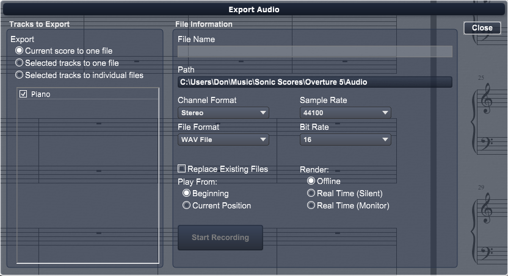

Audio/MIDI>Export to File
Choose this command to export your score to an audio file. When you choose the Export to File, a dialog appears allowing you to choose the exported file name, path and how you wish the files to be created.

There are several elements in the ExportAudio dialog box. These are described, below:
File Information:
- Enter the destination file name.
- Click on the path button to choose the folder where the file will be saved.
Tracks to Export
- Select how the export is distributed among files.
- Select the tracks to be exported by clicking on the check box beside each track.
Channel Format:
Choose mono or stereo.
File Format:
Choose AIFF, Wave, or MP3 file format.
Sample Rate:
Choose a sample rate from 8000 to 384000
Bit Rate:
Choose the bit rate 8, 16, 32, or 64 bits.
Replace Existing files:
Click this to have Overture overwrite any existing files in the destination folder
Play from:
- Beginning - Start playing the score from the beginning when the Start Recording button is pressed.
- Current Position - Start playing the score from the current position when the Start Recording button is pressed.
Render:
- Offline - Choose this to render the recording off line. This is the fastest method.
Note: Some plugins can not render their audio faster than real time. If you hear pops or unexpected silence in your recording try using Real Time rendering
- Real Time (Silent) - Choose this to render the recording in real time but mute the output.
- Real Time (Monitor) - Choose this to render the recording in real time and listen to your score as it is being rendered.
Start Recording
After you have set the name, path, and all parametersPress this button to start recording to a file. During the process Overture will display a progress bar while each file is being written.